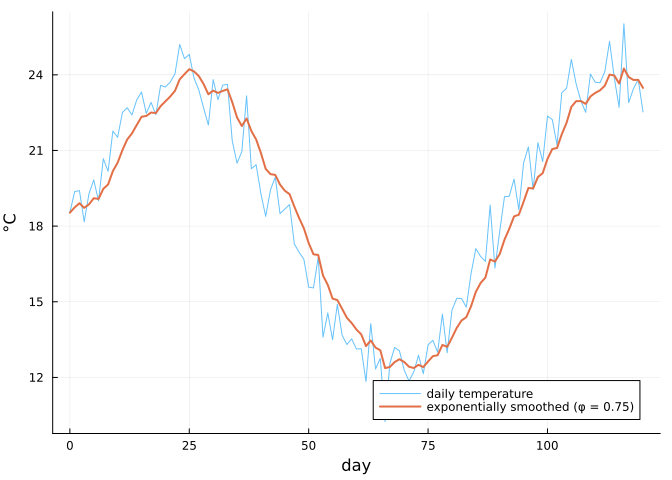
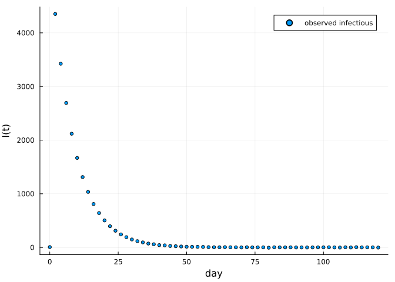
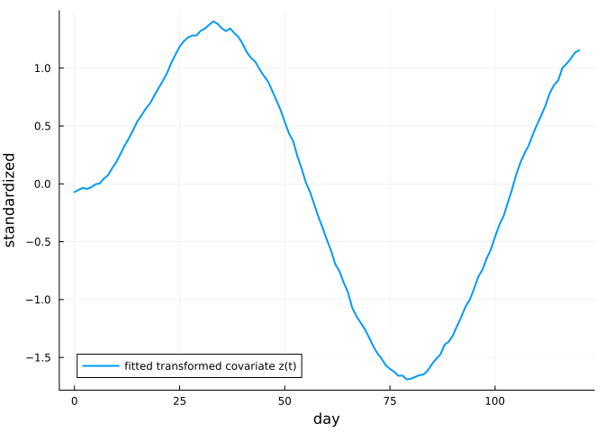
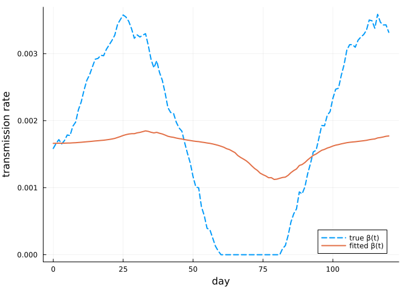

Transformed Environmental Covariates
Overview
Environmental drivers rarely act instantaneously. Mosquito abundance responds to the temperature of the preceding weeks, not today’s reading; soil moisture integrates rainfall; a cohort’s recruitment reflects conditions during a window months earlier. Regressing a rate on the raw covariate assumes a lag structure of zero, which is a strong and usually unexamined choice.
TransformedCovariateApproximator estimates the transformation and the response together. It composes two pieces:
- an inner transformation of the covariate series — with
trans=:expsm, exponential smoothing $z_t = \phi z_{t-1} + (1-\phi)x_t$, whose inertia $\phi$ is itself a fitted parameter; - an outer penalized smooth of the transformed series, optionally shape-constrained.
In the dynamics it is a one-argument callable of time, like every other time-varying unknown in the package.
using PartiallySpecifiedModels
using OrdinaryDiffEq
using Plots; default(fmt=:png)
using Random
Random.seed!(3)TaskLocalRNG()A temperature-driven epidemic
Daily temperature is noisy; transmission responds to a smoothed version of it.
tt = collect(0.0:1.0:120.0)
temp = 18.0 .+ 6.0 .* sin.(2π .* tt ./ 90.0) .+ 0.8 .* randn(length(tt))
phi_true = 0.75
sm = similar(temp); sm[1] = temp[1]
for i in 2:length(temp)
sm[i] = phi_true*sm[i-1] + (1-phi_true)*temp[i]
end
beta_true = 0.00035 .* max.(sm .- 14.0, 0.0)
plot(tt, temp, label="daily temperature", lw=1, alpha=0.6)
plot!(tt, sm, label="exponentially smoothed (φ = 0.75)", lw=2)
xlabel!("day"); ylabel!("°C")
btrue_at(t) = beta_true[clamp(searchsortedfirst(tt, t), 1, length(tt))]
N = 5000.0
function sir_true!(du, u, p, t)
S, I = u; inf = btrue_at(t)*S*I
du[1] = -inf; du[2] = inf - 0.12I
end
st = solve(ODEProblem(sir_true!, [N-5.0, 5.0], (0.0, 120.0)), Tsit5(); saveat=2.0)
obs_t = collect(st.t)
Y = reshape([max(st(t)[2], 0.0) for t in obs_t] .+ 2.0 .* randn(length(obs_t)), :, 1)
scatter(obs_t, Y[:,1], label="observed infectious", ms=3,
xlabel="day", ylabel="I(t)")
Fitting the transformation and the response together
function sir!(du, u, p, t)
S, I = u
inf = p.beta(t) * S * I # one-argument callable of TIME
du[1] = -inf
du[2] = inf - 0.12I
end
approx = TransformedCovariateApproximator(:beta, tt, temp;
trans=:expsm, nknots=6,
constraint=:increasing)
prob = PSMProblem(sir!, [N-5.0, 5.0], (0.0, 120.0), [approx];
data_times=obs_t, data_values=Y, obs_to_state=[2],
known_params=NamedTuple(), likelihood=Gaussian(), solver=Tsit5())
sol = solve(prob, LAML(maxiters=40, verbose=false))
(; data_loss = sol.data_loss, edf = sol.edf,
converged = sol.convergence.converged)┌ Warning: LAML: smoothing selection never moved λ̂ off its initialization, so the reported λ̂, EDF and posterior covariance describe the INITIAL smoothing, not a selected one. Every Fellner–Schall proposal was rejected (or the iteration budget was spent before any ran). A noisy working-model Jacobian or a stalled nonlinear search can prevent acceptance; try `jac=:forwarddiff`, more `maxiters`, or a different knot count. See `convergence.smoothing_advanced`.
└ @ PartiallySpecifiedModels ~/Projects/psm/PartiallySpecifiedModels.jl/src/solver.jl:2070
(data_loss = 183.73112978055053, edf = 1.0000450942048313, converged = false)With 61 observations at noise $\sigma = 2$, the noise floor is about $61 \times 2^2 = 244$, so a data_loss below that is a good fit rather than a worryingly large number — always convert to the floor before judging.
Note converged = false, and that the solver emitted a warning above. This fit reached maxiters with the smoothing parameter still on its initialization (convergence.smoothing_advanced is false), so the reported EDF describes the initial smoothing rather than a selected one. The trajectory fit is nonetheless below the noise floor, which is why the curves below look reasonable — but the honest reading is that this problem wants more iterations or jac=:forwarddiff, and the recovered inertia should be treated as indicative rather than estimated. It is left as-is here deliberately: this is what the diagnostic is for, and a vignette that hid it would be teaching the wrong habit.
Reading the fitted inertia
smoothing_inertia returns the inertia at each time point, not a single scalar — the inner transformation is allowed to vary if the inner design carries covariates. With a constant inner design the entries coincide:
phi_hat = smoothing_inertia(prob.approximators[1], sol.parameters.beta)
(; phi_min = minimum(phi_hat), phi_max = maximum(phi_hat), phi_true = phi_true)(phi_min = 0.9443965752946735, phi_max = 0.9443965752946735, phi_true = 0.75)The recovered inertia is in the right regime — strongly smoothed rather than responsive to daily fluctuations — but it is not exact, and it should not be oversold. Inertia is identified only through its effect on the epidemic curve, and epidemics are integrators: many nearby $\phi$ produce nearly the same incidence. Treat $\hat\phi$ as an order-of-magnitude statement about how long the driver is remembered.
z = transformed_covariate(prob.approximators[1], sol.parameters.beta)
plot(tt, z, lw=2, label="fitted transformed covariate z(t)",
xlabel="day", ylabel="standardized")
Fitted transmission against the truth
bhat = [sol.unknown_functions[:beta](t) for t in tt]
plot(tt, beta_true, lw=2, ls=:dash, label="true β(t)")
plot!(tt, bhat, lw=2, label="fitted β(t)")
xlabel!("day"); ylabel!("transmission rate")
When to use TransformedCovariateApproximator
- The driver is measured, but the lag or memory with which it acts is not known — and you would rather estimate it than assume it.
- You want the response to the driver shape-constrained (
:increasinghere: transmission does not fall as it warms). - Alternatives:
trans=:lagindexfits a lag-weight profile instead of an exponential-smoothing inertia; inspect it withlag_weights.
Be aware that a fit can end with smoothing selection never having moved (see convergence.smoothing_advanced); the solver warns when that happens, and the remedy is usually jac=:forwarddiff or a larger maxiters.
References
- Teller, B.J., Adler, P.B., Edwards, C.B., Hooker, G. & Ellner, S.P. (2016). Linking demography with drivers: climate and competition. Methods in Ecology and Evolution 7(2):171–183.